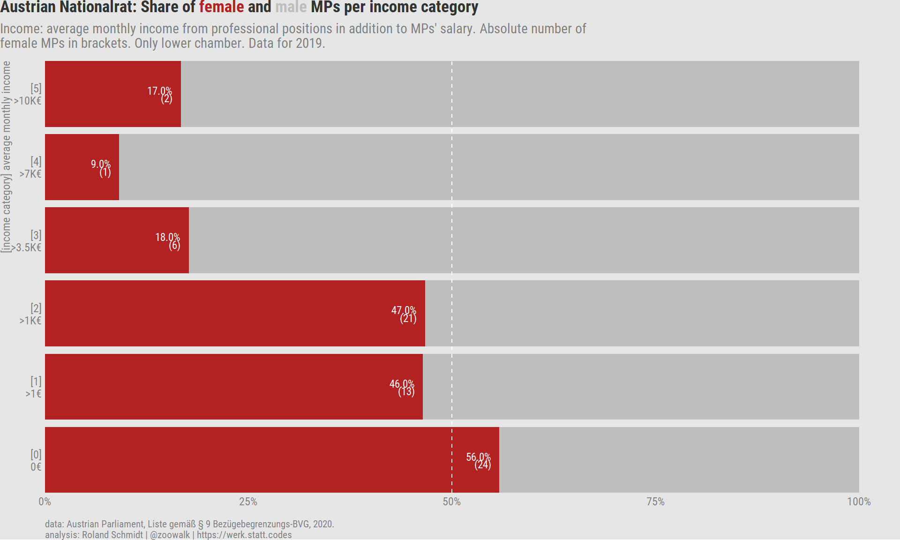
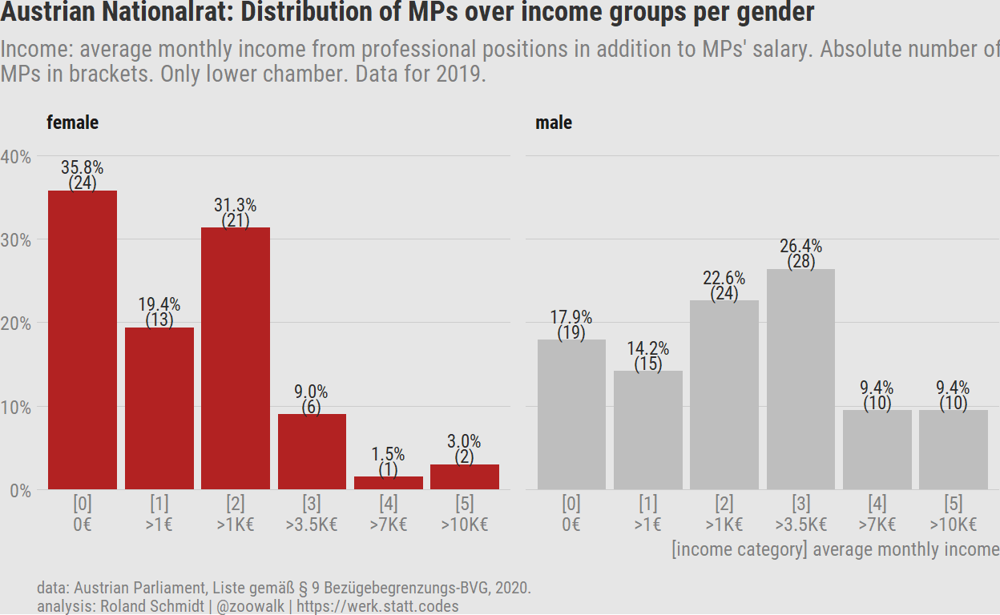
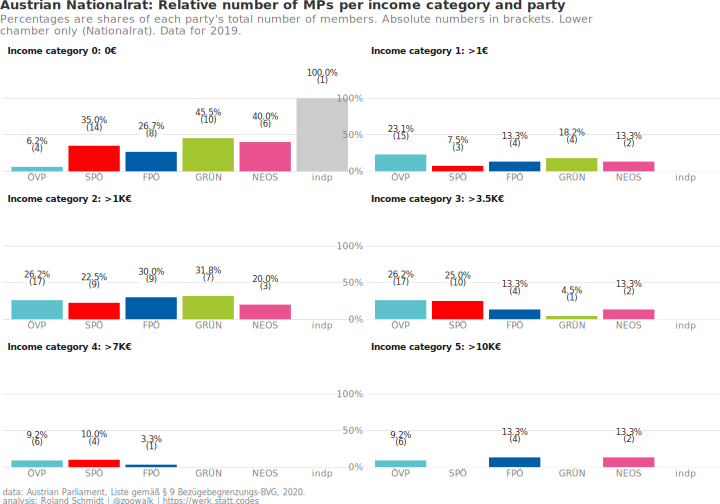
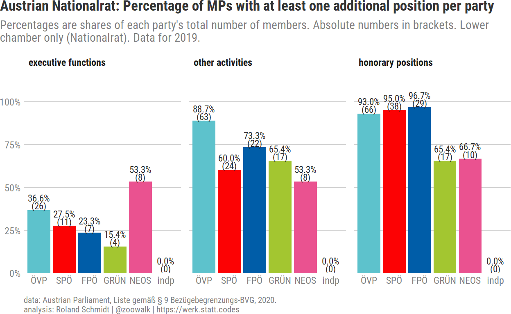
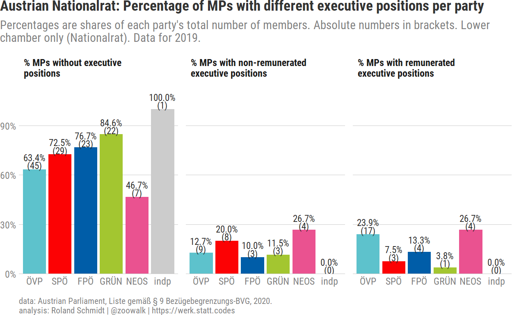
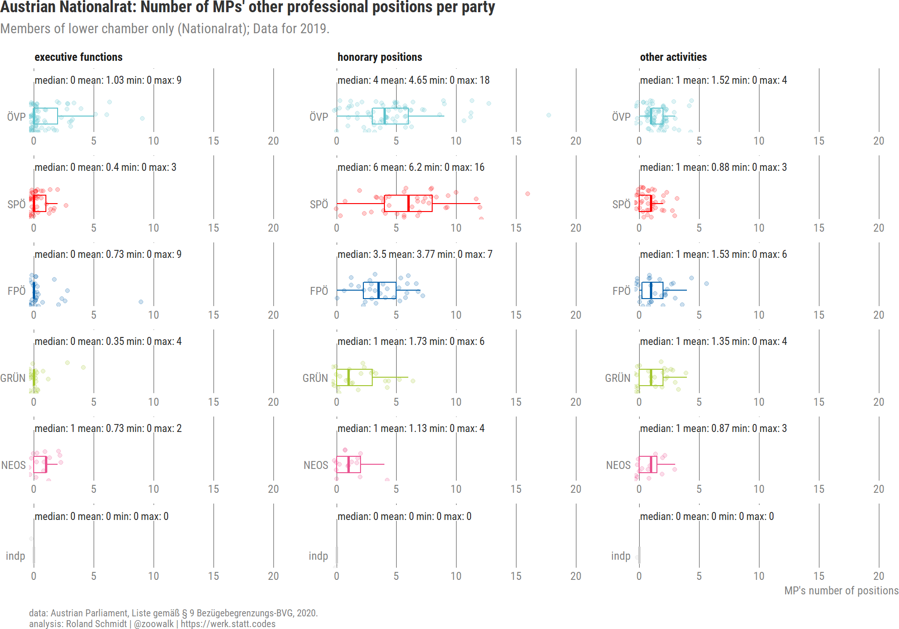

Context
Recently, at the end of June, the Austrian Parliament published its annual report on MPs’ additional sources of revenue and pertaining activities (see here). The publication is mandatory by law, and basically seeks to curtail potential conflicts of interest and to increase transparency as to MPs’ activities outside of parliament. While the list comes, unsurprisingly, with a number of caveats 1, and by itself can hardly constitute a watertight safeguard against the various ‘undemocratic temptations’, the report nevertheless seems to provide interesting data on MPs’ financial statuses and professional machinations. All in all enough reason to give it a closer look, i.e. a blog post.2 Note that I will focus only on Austria’s lower chamber (Nationalrat) in this post. If time permits, I’ll follow up with one on the upper chamber (Bundesrat) at a later point.
If you’re not that much interested in the R code, simply collapse the code chunks. The entire code for the analysis will be on my github account (link). For any questions, comments etc. feel free to send me a direct message on twitter (link).
Setup
But step by step: Let’s first take care of the necessary R packages and blog/rmarkdown setup.
Code: Load packages
Show code
library(tidyverse)
library(here)
library(extrafont)
loadfonts(device = "win", quiet = T)
library(hrbrthemes)
hrbrthemes::update_geom_font_defaults(family = "Roboto Condensed",
size=3)
library(scales)
library(knitr)
library(paletteer)
library(ggtext)
library(glue)
library(gt)
library(DT)
library(pdftools)
library(lemon)
library(ggiraph)
Code: Define rmarkdown options
Show code
# knit_hooks$set(wrap = function(before, options, envir) {
# if (before) {
# paste0("<", options$wrap, ">")
# } else {
# paste0("</", options$wrap, ">")
# }
# })
# knitr::opts_chunk$set(
# echo = TRUE,
# fig.align = "left",
# # fig.height = 5,
# # fig.width = 7,
# out.width = "100%",
# message = FALSE,
# warning = FALSE
# )
#
# options(width = 180, dplyr.width = 150)
Code: Define plot theme
Show code
plot_bg_color <- readr::read_file(file=here::here("theme.css")) %>%
str_extract(., regex("(?<=blog-bg-color:).*?(?=;)")) %>%
str_trim() %>%
str_extract(., regex("^#\\S+"))
theme_post <- function() {
hrbrthemes::theme_ipsum_rc() +
theme(
plot.background = element_rect(fill = plot_bg_color, color=NA),
panel.background = element_rect(fill = plot_bg_color, color=NA),
plot.margin = margin(l = 0, unit = "cm"),
plot.title = element_text(
color = "grey20",
face = "bold",
margin = margin(l = 0, unit = "cm"),
size = 13
),
plot.title.position = "plot",
plot.subtitle = element_text(
color = "grey50",
margin = margin(t = 0.2, b = 0.3, unit = "cm"),
size = 11
),
plot.caption = element_text(
color = "grey50",
size = 8,
hjust = c(0)
),
plot.caption.position = "panel",
axis.title.x = element_text(angle = 0,
color="grey50",
hjust=1),
axis.text.x = element_text(size = 9,
color = "grey50"),
axis.title.y = element_blank(),
axis.text.y = element_text(size = 9,
color="grey50"),
panel.grid.minor.x = element_blank(),
panel.grid.major.x = element_blank(),
panel.grid.minor.y = element_blank(),
panel.spacing = unit(0.25, "cm"),
panel.spacing.y = unit(0.25, "cm"),
strip.text = element_text(
angle = 0,
size = 9,
vjust = 1,
face = "bold"
),
legend.title = element_text(
color = "grey30",
face = "bold",
vjust = 1,
size = 7
),
legend.text = element_text(
size = 7,
color = "grey30"
),
legend.justification = "left",
legend.box = "horizontal", # arrangement of multiple legends
legend.direction = "vertical",
legend.margin = margin(l = 0, t = 0, unit = "cm"),
legend.spacing.y = unit(0.07, units = "cm"),
legend.text.align = 0,
legend.box.just = "top",
legend.key.height = unit(0.2, "line"),
legend.key.width = unit(0.5, "line"),
text = element_text(size = 5)
)
}
my_caption=c("data: Austrian Parliament, Liste gemäß § 9 Bezügebegrenzungs-BVG, 2020. \nanalysis: Roland Schmidt | @zoowalk | https://werk.statt.codes")
Data extraction
As so often, one of the main challenges to actually analyze available data is to ‘liberate’ the information of interest from the format in which they are provided. The Parliament’s report comes as a pretty ‘untidy’ pdf with subheadings etc., a format hardly conducive for further analysis. Here’s one MP’s declaration from the report:

Essentially, the table provides four relevant pieces of information: 1) an income category, which groups MPs’ additional income (which is within the scope of the legal reporting obligations and in addition to their salary as an MP) according to their average monthly income in 2019;
The income categories are:
Show code
data.frame(
category = c(1L, 2L, 3L, 4L, 5L),
income.bracket = c(
"1-1,000", "1,001-3,500",
"3,501-7,000", "7,001-10,000", ">10,000")) %>%
gt() %>%
gt::cols_label(income.bracket=md("**income bracket (Euro)**"),
category=md("**category**")) %>%
gt::cols_align(align="right",
columns = vars(income.bracket))
| category | income bracket (Euro) |
|---|---|
| 1 | 1-1,000 |
| 2 | 1,001-3,500 |
| 3 | 3,501-7,000 |
| 4 | 7,001-10,000 |
| 5 | >10,000 |
And lists of 2) executive positions in stock companies, private limited companies, foundations or saving banks held by each MP; 3) other activities from which MPs generate income; and 4) honorary activities which yield no income (but could potentially nevertheless lead to some conflict of interest).
Extracting data from pdfs has been the topic of at least one of my previous posts (see here), and again the primary tool for the job is the wonderful pdftools package. Rather than seeking to extract tables from the pdf (e.g. with tabulizer ), I convert the content of each page of the report to a long text string and subsequently extract the parts of interest by means of stringr and regex. However, as I’ll explain below, this approach was only suited to do some part of the task at hand.
Let’s start by retrieving the raw text.
The code above provides us with a tibble containing as many rows as the report has pages (186). The expression str_replace_all(text_raw, "\\h+", " ") replaces all horizontal white space with a single space, but keeps line breaks (\n and \r). The latter will be needed at a later stage when it comes to identifying the location of data of interest and extract them.3
Each row is one long string containing all the information from only one single page on an MP. However, note that the declarations of some MPs span over multiple pages, hence their data is contained in multiple strings. This is something we have to account for when crunching numbers during the actual analysis. Here one example for the data on one MP. Use the horizontal scrollbar to get an idea of the strings composition.
[1] "(i)\nNationalrat\n- Liste\ngemäß § 9\nBezügebegrenzungs-\nBVG Stand\n06.11.2019\nBekanntgabe\nvon\nTätigkeiten\nund\nOffenlegung\nvon\nEinkommen\ngemäß § 6\nUnvereinbarkeits-\nund\nTransparenz-\nGesetz\n51879\nEINKOMMENSKATEGORIE\n(i) Mag.\nHannes\nAmesbauer,\nBA für\ndas Jahr\n2019: 2\n(von 1.001\nbis 3.500\nEuro)\n2020:\nMeldefrist\nendet am\n30.06.2021\nLEITENDE\nSTELLUNG\nIN\nAKTIENGESELLSCHAFT,\nGESELLSCHAFT\nMIT\nBESCHRÄNKTER\nHAFTUNG,\nSTIFTUNG\nODER\nSPARKASSE\n- § 6 Abs.\n2 Z 1 (i)\n(Werden\naus einer\nTätigkeit\nkeine\nVermögensvorteile\n(i)\nerzielt,\nwird dies\ndurch *\ngekennzeichnet)\nRechtsträger\nLeitende\nStellung\nkeine\nSONSTIGE\nTÄTIGKEITEN,\nAUS DENEN\nVERMÖGENSVORTEILE\nERZIELT\nWERDEN - §\n6 Abs. 2 Z\n2 (i) lit.\nDienstgeber/\nRechtsträger/\nUnternehmen\nTätigkeit\nc(i)\nMarktgemeinde\nNeuberg an\nder Mürz\nkeineVizebürgermeister\nLEITENDE\nEHRENAMTLICHE\nTÄTIGKEITEN\n(keine\nVermögensvorteile)\n- § 6 Abs.\n2 Z 3 (i)\nRechtsträger\nLeitende\nTätigkeit\nFPÖ\nOrtsparteiobmann\nAblauf der\nMeldefrist:\n23.11.2019\nNeuberg\nan der\nMürz FPÖ\nBezirksparteiobmann\nBruck-\nMürzzuschlag\nFPÖ\nLandesparteiobmann-\nStellvertreter\nSteiermark\nFPÖ\nMitglied\ndes\nBundesparteivorstandes\nFreiwillige\nFeuerwehr\nKrampen\nWehrkommandant\n(i)\nNäheres\nbei:\nInformationen\nzur Liste\ngemäß § 9\nBezBegrBVG\n1"Get income category
As a first step, let’s extract the name of the MPs and the income category from the raw strings obtained above. The code chunk below is the pertaining code, making use of stringr and regex. Note the (?s) term in the regex expressions. While . would match any pattern but not line breaks, the (?s) alters this limitation and forces . to match also \n and \r.4
df_all <- df_all %>%
mutate(name = str_extract(text_raw, regex("(?<=Einkommenskategorie)(?s).*(?=für das Jahr)", ignore_case = T)) %>%
str_remove(., "\\(i\\)") %>%
str_trim()) %>%
mutate(income_category_19_raw = str_extract(text_raw, regex("(?<=2019:\\s?)\\S"))) %>%
mutate(income_category_19=case_when(income_category_19_raw=="-" ~ 0,
TRUE ~ as.numeric(income_category_19_raw))) %>%
replace_na(., list(income_category_19="missing")) %>%
select(-income_category_19_raw)
As already highlighted, since the declarations of some MPs run over multiple pages and are hence included several times in the above output, we have to limit the result to one row per MP. This is what distinct() does in the code chunk below.
df_income <- df_all %>%
select(name, income_category_19) %>%
distinct()
nrow(df_all)
[1] 186nrow(df_income)
[1] 183Missing income data
Let’s have a first, quick look at the information obtained so far:
Code: Number of MPs per income bracket
tbl_income <- df_income %>%
count(income_category_19) %>%
gt() %>%
gt::cols_label(income_category_19=md("**income category**"),
n=md("**number of MPs**"))
| income category | number of MPs |
|---|---|
| 0 | 43 |
| 1 | 28 |
| 2 | 45 |
| 3 | 34 |
| 4 | 11 |
| 5 | 12 |
| missing | 10 |
Before digging into frequencies of the income categories etc, a note on the missing observations. In ten instances, MPs did not report their income for 2019. Here are the ten MPs with missing income data.
Code: MPs with with missing income data
df_income_missing <- df_income %>%
filter(income_category_19=="missing") %>%
mutate(family_name=str_remove(name, ",.*$") %>%
str_extract(., "\\S*$"))
tbl_missing <- df_income_missing %>%
select(name, income_category_19) %>%
gt() %>%
cols_label(income_category_19=md("**income bracket**"),
name=md("**MP**")) %>%
gt::cols_align(align="center",
columns = vars(income_category_19))
| MP | income bracket |
|---|---|
| Mag. Georg Bürstmayr | missing |
| Mag. Romana Deckenbacher | missing |
| Heike Grebien | missing |
| Irene Neumann-Hartberger | missing |
| Mag. Agnes Sirkka Prammer | missing |
| Dr. Werner Saxinger, MSc | missing |
| Dr. Josef Smolle | missing |
| Clemens Stammler | missing |
| Ing. Mag. (FH) Alexandra Tanda | missing |
| Mag. Peter Weidinger | missing |
One possible explanation for missing income data could be that these MPs have joined parliament only after the reporting period, i.e. in 2020 (I mean, there couldn’t be any other possibility, no?). To check this, we need to obtain the dates of each MP’s entry to parliament. Initially, I expected that such data should be readily available, but I must have been looking at the wrong places… Anyway, never waste an opportunity to scrap data.
The website of the Austrian Parliament provides a list of all (current and previous) MPs. This list is provided in an xml format from which we can obtain the links to each MP’s individual biographical page. From these bios, we can subsequently extract the data when MP’s entered the parliament. Not a bad detour…or, as a saying in German goes, Umwege erhöhen die Ortskenntnisse…(something like ‘detours increase your local knowledge’.)
Show code
library(xml2)
library(rvest)
link <- "https://www.parlament.gv.at/WWER/PARL/J1918/filter.psp?view=RSS&jsMode=&xdocumentUri=&filterJq=&view=&NRBR=ALLE&GP=XXVII&R_WF=FR&FR=ALLE&W=W&M=M&listeId=8&FBEZ=FW_008"
#parse info from parliament's website
data <- xml2::read_xml(link)
#extract name of MPs
df_title <- data %>%
xml2::xml_find_all("//title") %>%
html_text() %>%
enframe(.,
name="id",
value="title")
#extract link to bio
df_link <- data %>%
xml2::xml_find_all("//link") %>%
html_text() %>%
enframe(.,
name="id",
value="link")
#combine both to one dataframe
df <- df_title %>%
left_join(., df_link,
by="id")
#remove non-MP relevant rows
df <- df %>%
filter(str_detect(link, "PAD_")) %>%
mutate(link=str_trim(link))
#define function to extract MP's entry/exit dates from biography
fn_get_dates <- function(x) {
read_html(x) %>%
html_nodes(xpath="/html/body/div[1]/div[5]/div[1]/div[1]/div[3]/div[2]/div[2]/ul[1]/li/div/text()[2]") %>%
html_text()
}
df
#apply funciton to all links
df_mp_dates <- df %>%
mutate(mp_dates=map(link, ~fn_get_dates(.)))
| MP | entry date |
|---|---|
| Mag. Georg Bürstmayr | 09.01.2020 |
| Mag. Romana Deckenbacher | 09.01.2020 |
| Heike Grebien | 09.01.2020 |
| Irene Neumann-Hartberger | 09.01.2020 |
| Mag. Agnes Sirkka Prammer | 09.01.2020 |
| Dr. Werner Saxinger, MSc | 01.04.2020 |
| Dr. Josef Smolle | 19.12.2019 |
| Clemens Stammler | 09.01.2020 |
| Ing. Mag. (FH) Alexandra Tanda | 09.01.2020 |
| Mag. Peter Weidinger | 09.01.2020 |
And indeed. From the result above, we see that all those MPs who haven’t submitted any income information were not MPs in 2019 for a full month (this is the requirement stipulated in the pertaining regulation). Hence, for the subsequent analysis on income data, when can safely disregard these MPs.
Code: Remove MPs joining outside of reporting period
nrow(df_income)
[1] 183Code: Remove MPs joining outside of reporting period
[1] 173MPs’ gender
Let’s have a gender-sensitive look at the income data. With the genderpackage we are able to infer with some acceptable margin of error MPs’ gender from their first names. Names which were not (properly) recognized by the package I corrected manually in the code chunk below.
#get a clean name, without any academic or prefessional titles
df_income <- df_income %>%
mutate(name_family=str_remove(name, ",.*$") %>%
str_extract(., "\\S*$"),
.after=name) %>%
mutate(name_clean=name %>% str_remove(., regex(",.*$")) %>%
str_remove_all(., regex("\\S*\\.")) %>%
str_remove_all(., regex("\\(.*\\)")) %>%
str_trim())
library(gender)
#extract first name and apply gender function to it
df_income <- df_income %>%
mutate(first_name=str_extract(name_clean, regex("^\\S*"))) %>%
mutate(name_gender=map(first_name, possibly(gender,
otherwise="missing")))
# manually correct for some missing gender data
df_income<- df_income %>%
unnest_wider(name_gender,names_repair="universal") %>%
rename(name=name...1) %>%
select(-contains("year"), -contains("proportion"), -ends_with("7")) %>%
mutate(gender=case_when(str_detect(name, "Brandstötter")==TRUE ~ "female",
str_detect(name, "El-Nagashi")==TRUE ~ "female",
str_detect(name, "Sibylle")==TRUE ~ "female",
str_detect(name, "Himmelbauer")~"female",
str_detect(name, "Karlheinz")==TRUE ~ "male",
str_detect(name, "Jörg")==TRUE ~ "male",
str_detect(name, "Volker")==TRUE ~ "male",
str_detect(name, "Gertraud")==TRUE ~ "female",
str_detect(name, "Nurten")==TRUE ~ "female",
str_detect(name, "Süleyman")==TRUE ~ "male",
str_detect(name, "Ribo")==TRUE ~ "female",
TRUE ~ as.character(gender)))
Female share per income group
What the subsequent analysis reveals is that the share of women per income category decreases the further we move up the income ladder. While there is almost gender parity in the income category 0, womens’ shares decrease continuously up to category 4.
Show code
df_gender <- df_income %>%
group_by(income_category_19, gender) %>%
summarise(n_obs=n()) %>%
mutate(n_rel_category=n_obs/sum(n_obs)) %>%
group_by(gender) %>%
mutate(n_gender=sum(n_obs)) %>%
ungroup() %>%
mutate(n_rel_gender=n_obs/n_gender)
pl_gender_category <- df_gender %>%
# filter(gender=="female") %>%
mutate(gender=fct_rev(gender)) %>%
ggplot()+
labs(title=glue("Austrian Nationalrat: Share of <span style = color:{gender_colors['female']}>female</span> and <span style = color:{gender_colors['male']}>male</span> MPs per income category"),
subtitle=str_wrap("Income: average monthly income from professional positions in addition to MPs' salary. Absolute number of female MPs in brackets. Only lower chamber. Data for 2019.", 105),
y="[income category] average monthly income",
caption=my_caption)+
geom_bar(aes(y=income_category_19,
x=n_obs,
fill=gender),
stat="identity",
position="fill")+
geom_text(data=. %>% filter(gender=="female"),
aes(y=income_category_19,
x=n_rel_category-0.01,
label=paste0(round(n_rel_category,2) %>%
percent(scale=100),
"\n(",
n_obs,
")")),
color="white",
lineheight=0.6,
hjust=1,
stat="identity")+
geom_vline(xintercept = .5,
color="white",
linetype="dashed"
)+
scale_fill_manual(values=gender_colors)+
scale_x_continuous(label=scales::label_percent(),
expand=expansion(mult=c(0, 0.05)))+
scale_y_discrete(labels=income_categories_short,
expand=expansion(mult=c(0, 0)),
position = "left")+
theme_post()+
theme(legend.position="none",
plot.title=element_markdown(),
axis.title.x=element_blank(),
axis.title.y.left = element_text(angle = 90,
color="grey50",
hjust=1),
axis.text.y.left = element_text(),
axis.text.y.right = element_blank(),
axis.title.y.right = element_blank(),
panel.grid.major.y = element_blank())

Share of income groups per gender group
Another gender sensitive perspective is to look at the distribution of the MPs across income categories within each gender group (in contrast to within each income group as in the previous graph). The graph highlights the difference between female and male MPs in terms of the income categories. While the distribution for female MPs is skewed towards lower income categories, that for male MPs is more concentrated on income category 2 and 3. Furthermore, only 4.4 % of all female MPs have additional incomes falling into the two highest categories, 4 and 5. In contrast, 19 % of all male MPs have income from these categories.
Code: graph intra-gender distribution
pl_gender_intra_dist <- df_gender %>%
ggplot()+
labs(title="Austrian Nationalrat: Distribution of MPs over income groups per gender",
subtitle=str_wrap("Income: average monthly income from professional positions in addition to MPs' salary. Absolute number of MPs in brackets. Only lower chamber. Data for 2019.", 105),
x="[income category] average monthly income",
caption=my_caption)+
geom_bar(aes(x=income_category_19,
y=n_rel_gender,
fill=gender),
stat="identity")+
geom_text(aes(x=income_category_19,
y=n_rel_gender+0.02,
label=paste0(percent(n_rel_gender, accuracy = 0.1),
"\n",
"(", n_obs, ")")),
lineheight=0.7,
stat="identity")+
scale_fill_manual(values=gender_colors,
na.value = "grey30")+
scale_x_discrete(labels=income_categories_short)+
scale_y_continuous(label=scales::label_percent(accuracy=1),
expand=expansion(mult=c(0, 0.1)))+
facet_wrap(vars(gender))+
theme_post()+
theme(legend.position = "none",
axis.title.x = element_text(angle = 0,
color="grey50",
hjust=1),)

Party affiliation
Get MPs’ party membership
As the next step to facilitate the analysis of the data, let’s add MPs’ party affiliation. I do this by importing the pertaining data from wikipedia’s entry on Austria’s current MP (the parliament’s website was simply to messy for my liking). Here, the rvest package is our friend. Once the data on MP membership is retrieved, I merge it with MPs’ income/transparency data. The key/identifier to merge both sets of data is an MP’s name. To make this work, I had first to remove all academic/professional titles (it’s Austria after all) and harmonize the sequence of first and family names.
Code: Get party affiliation
wiki_link <- "https://de.wikipedia.org/wiki/Liste_der_Abgeordneten_zum_%C3%96sterreichischen_Nationalrat_(XXVII._Gesetzgebungsperiode)"
library(rvest)
df_nr <- wiki_link %>%
read_html() %>%
html_nodes("table") %>%
html_table(fill=TRUE) %>%
.[[1]] %>%
janitor::remove_empty(., which=c("cols")) %>%
janitor::clean_names() %>%
as_tibble()
df_nr <- df_nr %>%
mutate(name_family=str_extract(name, regex("^\\S*"))) %>%
select(contains("name"), party=wahl_partei) %>%
mutate(name_first=str_remove(name, regex("\\S*"))) %>%
mutate(name_clean=paste(name_first, name_family) %>%
str_trim() %>% str_squish()) %>%
mutate(name_clean=case_when(str_detect(name, "Künsberg")==TRUE ~ "Martina Künsberg Sarre",
TRUE ~ as.character(name_clean)))
#manually adjust inconsistently spelled names
df_income <- df_income %>%
mutate(name_clean=case_when(str_detect(name, "Nurten")==TRUE ~ "Nurten Yilmaz",
# str_detect(name, "Künsberg")==TRUE ~ " Martina Künsberg Sarre",
str_detect(name, "Herr")==TRUE ~ "Julia Herr",
str_detect(name, "Schellhorn")==TRUE ~ "Sepp Schellhorn",
str_detect(name, "Lercher")==TRUE ~ "Max Lercher",
str_detect(name, "Niss")==TRUE ~ "Maria Niss",
TRUE ~ as.character(name_clean)))
df_income <- df_income %>%
left_join(., df_nr %>%
select(name_clean, party),
by=c("name_clean"="name_clean")) %>%
mutate(party=case_when(str_detect(name, "Strache")==T ~ "independent",
TRUE ~ as.character(party))) %>%
ungroup()
df_income <- df_income %>%
mutate(party=fct_infreq(party))
Below the result with all MPs, their party affiliation, and income data.
MPs’ income category by party
With data on each MP’s income category and party membership available, let’s aggregate the data by parties. The graph below show the distribution of MPs over income categories per party in relative (and absolute) terms.
Code: plots on income categories
df_agg <- df_income %>%
ungroup() %>%
mutate(income_category_19_fac=as_factor(income_category_19) %>%
fct_inseq()) %>%
mutate(party=fct_infreq(party)) %>%
group_by(income_category_19, party, .drop = F) %>%
summarise(n_obs=n()) %>%
group_by(party) %>%
mutate(n_obs_total=sum(n_obs)) %>%
mutate(n_obs_rel=n_obs/n_obs_total)
pl_rel <- df_agg %>%
ggplot()+
labs(title="Austrian Nationalrat: Relative number of MPs per income category and party",
subtitle=str_wrap("Percentages are shares of each party's total number of members. Absolute numbers in brackets. Lower chamber only (Nationalrat). Data for 2019.", 105),
x="[income category] average monthly income",
caption=my_caption)+
geom_label(data=. %>% filter(n_obs_rel >0),
aes(x=party,
y=n_obs_rel+.3,
family="Roboto Condensed",
group=party,
label=paste0(scales::percent(n_obs_rel,
accuracy=0.1),
"\n",
"(", n_obs, ")")
),
fill=plot_bg_color,
label.size=0,
label.padding = unit(0.1, "lines"),
lineheight=0.7,
family="Roboto Condensed",
position=position_dodge2(width = 1))+
geom_bar(aes(x=party,
y=n_obs_rel,
group=income_category_19,
fill=party),
position=position_dodge2(),
stat="identity"
)+
scale_fill_manual(values=party_colors)+
scale_x_discrete(labels=abbreviate)+
scale_y_continuous(label=scales::label_percent(),
# limits = c(0, 1.15),
expand=expansion(mult=c(0, 0.15)))+
lemon::facet_rep_wrap(vars(income_category_19), labeller=labeller(income_category_19=map_chr(income_categories_short, ~str_remove_all(., regex("\\]|\\["))) %>%
map_chr(., ~str_replace(., regex("\\\n"), ": ")) %>%
map_chr(., ~paste0("Income category ", .))),
ncol=2,
repeat.tick.labels = TRUE)+
theme_post()+
theme(legend.position="none",
axis.title.x = element_blank())

The ÖVP features the smallest share of MPs with no additional income (income category 0, only 6.2 %) followed by the FPÖ (though with a substantially higher share of 26.7 %). In contrast, Greens and Neos feature with 45.5 % and 40 % the highest share of MPs in in this category (leaving aside, Philippa Strache, the one independent MP with no additional income). The ÖVP features the highest absolute numbers in income categories 3, 4 and 5. In contrast, there are no Green MPs with an income falling into category 4 or 5. Similarly, there is also not a single MP from the SPÖ with an income from category 5. What’s noteworthy with Neos is that they feature a comparably large share of MPs from income category 0, but also the largest relative number of MPs from the highest income category (13.3 %; equal with that of the FPÖ).
MPs’ further jobs
The subsequent part of the analysis will focus on MPs’ additional professional positions, as provided by the transparency report. As outlined in the introduction, it provides details on MPs’ additional 1) executive positions in stock companies, private limited companies, foundations or saving banks; this section further distinguishes between those executive positions which are remunerated and those which aren’t. 2) other professional activities from which MPs generate income; and 3) (unpaid) honorary activities.
Extracting data
Extracting MPs’ additional professional positions from the pdfs has been somewhat challenging. Initially - I was actually about to post the blog - I thought I could retrieve the data again with the pdf_text function as done above. However, when double checking some of the obtained results with the original pdf, I had to realize that some of my obtained numbers were inflated. After some digging and more digging, it turned out that the error originated from professional positions with names running over more than one line, i.e. which have a line break. Since I initially had counted the number of lines of positions to get the number of positions, some positions were counted multiple times. This problem arose since I was not able to distinguish between line breaks within cells (position with a long name) and those line breaks which indicated a new cell/row in the pdf’s table (different professional position).
The answer to this challenge is provided by the pdf_data function, also from the pdftools package. As the output below shows, the function provides you with x and y coordinates for the actual, physical location of each textbox (for details see here).
Taking a closer look at the rows in the results, I noticed that the difference in y values for linebreaks within a cell (long position name) is different than that between cells (different position). While ‘normal’ line breaks result in a y value change of 11, new cells result in a higher change of the y value. Hence, the difference in y values can be used as an indicator for a new cell and hence a different professional position.
To make use of this difference, I first calculate the difference of y values per row (line_diff), and subsequently and indicator which turns 1 if the y difference exceeds 11 (row_jump). Finally, I accumulate the value of the indicator to get an indicator for each row (row_indicator). For an example see the output below.
In the next step, I group the data by the row_indicator and combine the different text parts with the same row indicator into one string. As a result, we get a dataframe where each row contains one row of the table (including those parts after the line break). Hooray!
Code: Table with one row per position
df_rows <- df_linebreaks %>%
group_by(row_indicator) %>%
summarise(text_combined = paste(text, collapse = " ")) %>%
mutate(text_combined = text_combined %>% str_trim() %>% str_squish())
# A tibble: 21 x 2
row_indicator text_combined
<dbl> <chr>
1 1 Nationalrat - (i) Liste gemäß § 9 Bezügebegrenzungs-~
2 2 Bekanntgabe von Tätigkeiten und Offenlegung von Eink~
3 3 52688 (i) EINKOMMENSKATEGORIE Dipl.-Ing. Nikolaus Be~
4 4 2020: Meldefrist endet am 30.06.2021
5 5 (i) LEITENDE STELLUNG IN AKTIENGESELLSCHAFT, GESELLS~
6 6 Rechtsträger Leitende Stellung
7 7 Dr. Lorenz Karall-Stiftung, Eisenstadt Ablauf der Me~
8 8 Margaretha Lupac Stiftung Ersatzmitglied im Stiftung~
9 9 Polster-Stiftung Vorsitzender des Stiftungsrates *
10 10 (i) SONSTIGE TÄTIGKEITEN, AUS DENEN VERMÖGENSVORTEIL~
# ... with 11 more rowsFrom this new dataframe we have to filter out those rows which contain the different professional positions we are interested in. To do this, I first extract the row number of those rows which contain the subheading of each nested table (on executive, other, and honorary positions). With row number values of these rows, I can subsequently filter out those rows which are located between the headings (= professional positions).
Code: row numbers of sub-headings
# headings
heading_executive <- df_rows %>%
filter(str_detect(text_combined, regex("Leitende Stellung in", ignore_case = T))) %>%
pull(row_indicator)
heading_other <- df_rows %>%
filter(str_detect(text_combined, regex("SONSTIGE TÄTIGKEITEN", ignore_case = T))) %>%
pull(row_indicator)
heading_honorary <- df_rows %>%
filter(str_detect(text_combined, regex("ehrenamtlich", ignore_case = T))) %>%
pull(row_indicator)
heading_executive
[1] 5Code: row numbers of sub-headings
heading_other
[1] 10Code: row numbers of sub-headings
heading_honorary
[1] 13Putting it all into a function
I put all the above outlined (and subsequent) steps into a function which provides me with the number of positions per category for each MP. Have a look in the code chunk below. In a sense, it’s the key element of the overall analysis.
Code: Function to extract positions
fn_get_positions <- function(x) {
d <- x %>%
arrange(y) %>%
mutate(line_diff = y - dplyr::lag(y, default = 0)) %>%
mutate(row_jump = case_when(
line_diff > 11 ~ 1,
TRUE ~ 0
)) %>%
mutate(row_indicator = cumsum(row_jump)) %>%
group_by(row_indicator) %>%
summarise(text_combined = paste(text, collapse = " ")) %>%
mutate(text_combined = text_combined %>% str_trim() %>% str_squish())
# headings
heading_executive <- d %>%
filter(str_detect(text_combined, regex("Leitende Stellung in", ignore_case = T))) %>%
pull(row_indicator)
heading_other <- d %>%
filter(str_detect(text_combined, regex("SONSTIGE TÄTIGKEITEN", ignore_case = T))) %>%
pull(row_indicator)
heading_honorary <- d %>%
filter(str_detect(text_combined, regex("ehrenamtlich", ignore_case = T))) %>%
pull(row_indicator)
# executive position
if (length(heading_executive)!=0 & length(heading_other!=0)) {
df_executive <- d %>%
filter(!str_detect(text_combined, regex("Rechtsträger Leitende Stellung"))) %>%
filter(row_indicator > heading_executive) %>%
filter(row_indicator < heading_other) %>%
select(-row_indicator)
n_executive <- ifelse(df_executive %>%
filter(str_detect(text_combined, regex("^keine$"))) %>%
nrow() == 0,
nrow(df_executive),
0
)
} else {
df_executive <- tibble(text_combined = NA)
n_executive <- NA
}
# non-remunerated positions
n_executive_non_remunerated <- df_executive %>%
filter(str_detect(text_combined, regex("\\*"))) %>%
nrow()
# other
if (length(heading_other)!=0 & length(heading_honorary)!=0) {
df_other <- d %>%
filter(!str_detect(text_combined, regex("Dienstgeber/Rechtsträger/"))) %>%
filter(row_indicator > heading_other) %>%
filter(row_indicator < heading_honorary) %>%
select(-row_indicator)
n_other <- ifelse(df_other %>%
filter(str_detect(text_combined, regex("^keine$"))) %>%
nrow() == 0,
nrow(df_other),
0
)
} else {
df_other <- tibble(text_combined = NA)
n_other <- NA
}
# honorary
if (length(heading_honorary!=0)) {
df_honorary <- d %>%
filter(!str_detect(text_combined, regex("Rechtsträger"))) %>%
filter(!str_detect(text_combined, regex("\\(i\\) Näheres bei\\: Informationen"))) %>%
filter(row_indicator > heading_honorary) %>%
select(-row_indicator)
n_honorary <- ifelse(df_honorary %>%
filter(str_detect(text_combined, regex("^keine$"))) %>%
nrow() == 0,
nrow(df_honorary),
0
)
} else {
df_honorary <- tibble(text_combined = NA)
n_honorary <- NA
}
# combine retreived info
df <- tibble(
executive_positions = list(df_executive),
executive_n = n_executive,
executive_non_remunerated_n=n_executive_non_remunerated,
other_positions = list(df_other),
other_n = n_other,
honorary_positions = list(df_honorary),
honorary_n = n_honorary
)
df
}
This function is applied to our previous results of the pdf_data function. At the end, I combine these results with MPs’ names and aggregate those reports of MPs which run over multiple pages. Et voila! You can use the arrows to sort the table and get e.g the top-10 MPs as to their number of executive positions.
Code: Apply function
df_data <- pdf_file %>%
map_dfr(., fn_get_positions)
df_positions <- bind_cols(df_all, df_data)
#rowwise & c_across to calculate rowwise sums
df_count <- df_positions %>%
group_by(name) %>%
summarize(across(ends_with("_n"), sum, na.rm=T)) %>%
rowwise() %>%
mutate(total_n=sum(c_across(ends_with("_n")&!contains("remunerated")), na.rm=T))
Note that the table comprises 183 MPs, hence also includes those MPs which were not obliged to submit income data (see above, missing data).
Paid positions and income category
Let’s have a look at MPs’ number of paid positions and income category.
Paid are the positions stated in the category ‘other positions’ and ‘executive position’. As for the latter, however, the list also includes unpaid executive positions which are marked with an asterisk (*). Hence these positions have to be removed when calculating the total number of paid positions. For details see below.
Hover over the points in the plot below to get details on each individual MP. Note that the points are located randomly within each square to avoid overplotting.
Code: Number of paid positions and income category
df_income_positions <- df_count2 %>%
left_join(., df_income %>% select(gender, income_category_19, name),
by="name") %>%
select(name_clean, name, contains("executive"), contains("other"), party, income_category_19) %>%
mutate(positions_paid=(executive_n-executive_non_remunerated_n)+other_n)
df_income_positions <- df_income_positions %>%
filter(income_category_19!="missing") %>%
mutate(across(.cols=c(positions_paid, income_category_19), list(fct=~as_factor(.) %>% fct_inseq)))
income.key <- levels(factor(df_income_positions$income_category_19))
position.key <- seq(0, max(df_income_positions$positions_paid), 1) %>%
as.character()
pl_income_positions <- df_income_positions %>%
mutate(income_category_19_fct=fct_rev(income_category_19_fct)) %>%
mutate(positions_paid_fct=fct_expand(positions_paid_fct, position.key) %>%
fct_inseq()) %>%
mutate(party=fct_infreq(party)) %>%
ggplot()+
labs(x="number of paid positions",
y="[income category] average monthly income",
title="Austrian Nationalrat: MPs' number of paid positions and income category",
subtitle="Members of lower chamber only (Nationalrat). Data for 2019.\nMove mouse over dots to get info on MPs.",
caption=my_caption)+
geom_jitter_interactive(aes(x=positions_paid,
y=income_category_19,
color=party,
tooltip=paste0(name_clean, " ", party, "\n", "paid positions: ", positions_paid, "\n", "income category: ", income_category_19)))+
scale_color_manual(values=party_colors)+
scale_y_discrete(labels=income_categories_short)+
facet_grid(income_category_19_fct ~ positions_paid_fct,
drop=FALSE,
scales="free",
switch="x")+
theme_post()+
theme(panel.border = element_rect(color = "black", fill = NA, size = .5),
panel.grid.major = element_blank(),
panel.spacing.y = unit(0, "cm"),
panel.spacing.x = unit(0, "cm"),
legend.position = "bottom",
legend.title=element_blank(),
legend.direction = "horizontal",
axis.text.x = element_blank(),
axis.title.y=element_text(color="grey50",
hjust=1,
angle=90),
strip.text.x = element_text(hjust=0.5, color="grey50",
face="plain"),
strip.text.y = element_blank())+
guides(color=guide_legend(nrow=1))
Overall, there seems to be a positive association between the number of positions and income category. However, bear in mind that we do not know how much income is generate from each specific position. We only know about the sum and shouldn’t be tempted to infer any average salaries per position. E.g. while Herbert Fuchs’ four paid positions yield in sum an income of more than 10,000 Euros per average month (income category 5), it could be that the bulk of the income sum originates from one particularly position only. This is particularly relevant if we think about comparing MPs within the same income category but different number of paid positions.
A further qualifying note on the lower end of the income scale: Note that there are five curious cases of MPs having at least one paid position, but zero additional income. How can that be? Let’s look at these five cases more closely.
Code: MPs with no income but paid positions
df_mp5 <- df_income_positions %>%
filter(income_category_19==0) %>%
filter(positions_paid>0) %>%
select(contains("name"), party, executive_n, positions_paid) %>%
left_join(., df_positions %>% select(name, executive_positions, other_positions), by=c("name"="name")) %>%
pivot_longer(cols=c(contains("positions"), -positions_paid),
names_to="positions",
values_to="positions_name") %>%
mutate(positions_chr=map(positions_name, deframe) %>%
map_chr(., ~paste(., collapse=";\n "))) %>%
select(-positions_name) %>%
pivot_wider(id_cols=c(name, party),
names_from=positions,
values_from=positions_chr)
tb_mp5 <- df_mp5 %>%
gt() %>%
tab_header(
title=md("**MPs with zero income, but paid positions**")) %>%
tab_footnote(footnote = "Honorary positions exclude since unpaid.",
locations = cells_title(group="title")) %>%
cols_label("name"=md("**MP**"),
"party"=md("**party**"),
"executive_positions"=md("**executive positons**"),
"other_positions"=md("**other positions**"))
Show code
tb_mp5
| MPs with zero income, but paid positions1 | |||
|---|---|---|---|
| MP | party | executive positons | other positions |
| Douglas Hoyos-Trauttmansdorff | NEOS | DHNS GmbH, Wien, FN 531069 i keine Geschäftsführer (ab 09.04.2020) | keine |
| Dr. Nikolaus Scherak, MA | NEOS | Margaretha Lupac - Stiftung für Parlamentarismus und Demokratie Ablauf der Meldefrist: Ersatzmitglied 23.11.2019 im Kuratorium * (bis 19.11.2019); DHNS GmbH, Wien, FN 531069 i Geschäftsführer (ab 08.04.2020) | keine |
| Eva-Maria Himmelbauer, BSc | ÖVP | Cloudcompany GmbH, Retz, 474183d Ablauf der Meldefrist: Geschäftsführerin 23.11.2019 | keine |
| Mag. Markus Koza | GRÜNE | keine | (i) d ÖGB keine Vorstand (bis 31.10.2019); (i) c Die Grünen 1040 Klubobmann (bis 31.10.2019) |
| Mag. Meri Disoski | GRÜNE | keine | (i) c Bezirk Währing keine Bezirksrätin (bis 31.10.2019); (i) c Bezirk Währing Stv. Vorsitzende Bezirksvertretung (bis 31.10.2019) |
|
1
Honorary positions exclude since unpaid.
|
|||
As for Neos MPs’ Hoyos-Trauttmansdorff and Scherak a look at the parliament’s list reveals that their declaration features an additional note indicating that both assumed their position only from April 2020 onward. Hence, there was no pertaining income for the 2019 category. Scherak’s second executive position (‘Margaretha Lupac - Stiftung’) is unpaid as indicated by the *. Hence, these two cases are clear.
The other three cases are less clear to me. Eva-Maria Himmelbauer has an executive position in the Cloudcompany and there is no * sign which would indicate that the position was without remuneration. What’s furthermore noteworthy, if you look at the table above, it states ‘Ablauf der Meldefrist: Geschäftsführerin 23.11.2019’. Remarkably, this text is not visible in the original pdf on the parliament’s website. I have no idea why and how, but the used pdf_data function extracted also ‘hidden’ text from the pdf. Whether this text was a comment to an e.g. Excel cell or a hidden row/column, I don’t know. But irrespective of this, there is nothing in the additional text what would suggest - at leat to me - that Himmelbauer did not receive at least for one month a salary during the reporting period. Similarly, Markus Koza and Meri Dioski had both paid positions for their own parities up until 31.10.2019. Nevertheless, this income was not reported as indicated by the income category 0.
To be clear, I have no reason to think that there is any malice etc. behind these inconsistencies, and I assume there is some formal, regulatory explanation which hasn’t been made explicit in the parliament’s list. If anyone has an answer to this I would be keen to hear it.
Share of MPs with at least one additional position
To move on and, to get some contrast between parties, the barplot below indicates the percentage of MPs per party which do have at least one additional professional position.
>Code: MP share w at least one add. position
df_bar_position <- df_position_long %>%
filter(!position %in% c("executive_non_remunerated_n",
"total_n")) %>%
group_by(party, position) %>%
summarize(n_zero=length(number[number==0]),
n_non_zero=length(number[number!=0])) %>%
ungroup() %>%
mutate(perc=n_non_zero/(n_non_zero+n_zero)) %>%
mutate(position=fct_relevel(position, "honorary_n", after = 2))
pl_bar_position <- df_bar_position %>%
ggplot()+
labs(title="Austrian Nationalrat: Percentage of MPs with at least one additional position per party",
subtitle=str_wrap("Percentages are shares of each party's total number of members. Absolute numbers in brackets. Lower chamber only (Nationalrat). Data for 2019.", 105),
caption=my_caption)+
geom_bar(aes(x=party,
y=perc,
fill=party),
stat="identity")+
geom_text(aes(x=party,
y=perc,
group=party,
label=paste0(perc %>% scales::percent(),
"\n",
"(", n_non_zero,")")),
nudge_y = 0.05,
lineheight=0.7,
stat="identity")+
scale_fill_manual(values=party_colors)+
scale_color_manual(values=party_colors)+
scale_y_continuous(label=scales::label_percent(accuracy = 1),
expand=expansion(mult=c(0, 0.15)),
breaks=seq(0,1,.25))+
scale_x_discrete(label=abbreviate)+
facet_wrap(vars(position),
labeller = labeller(position=c("executive_n"="executive functions","other_n"="other activities",
"honorary_n"="honorary positions")))+
theme_post()+
theme(legend.position="none",
axis.title.x = element_blank())
Show code
pl_bar_position

As far as executive positions are concerned, the relative numbers of Neos stand out. More than half of Neos’ MPs have an executive position. In absolute numbers, the ÖVP with 26 MPs leads in this category.
When it comes to honorary positions, there is a considerable gap between the three larger parties (ÖVP, SPÖ, FPÖ) and the two smaller ones (Greens, Neos). One possible explanation (which I have not looked into though) could be that larger parties have more party affiliated associations in which their MPs take up honorary positions. Maybe, and I am purely speculating here, the number of honorary positions is a function of a party’s institutional width.
Executive positions
Below I further disaggregate executive positions into those which entail a salary and those which don’t. In the parliament’s report, executive positions without salary were marked with an asterisk (*). When retrieving the data above, I already accounted for this difference (str_detect(., "\\*")). The graph below now shows the percentage of MPs per party without executive positions, those with at least one executive position without salary (and no position with salary), and those with at least one remunerated executive position.
Code: different types of executive positions
df_executive <- df_count2 %>%
select(party, contains("executive")) %>%
mutate(executive_remunerated_n=executive_n-executive_non_remunerated_n) %>%
group_by(party) %>%
summarize(executive_no=length(executive_n[executive_n==0]),
remunerated_yes=length(executive_remunerated_n[executive_remunerated_n>0]),
remunerated_no=length(executive_remunerated_n[executive_remunerated_n==0 &
executive_n>0])) %>%
ungroup() %>%
rowwise() %>%
mutate(total=sum(c_across(where(is.numeric)), na.rm=T))
pl_executive <- df_executive %>%
pivot_longer(cols=-c(party, total),
values_to="number",
names_to="remunerated") %>%
mutate(party=fct_reorder(party, total) %>% fct_rev) %>% mutate(perc=number/total) %>%
mutate(remunerated=case_when(str_detect(remunerated, regex("executive_no"))==TRUE ~"% MPs without executive positions", str_detect(remunerated, regex("remunerated_no"))==TRUE ~ "% MPs with non-remunerated executive positions",
str_detect(remunerated, regex( "remunerated_yes"))==TRUE ~ "% MPs with remunerated executive positions",
TRUE ~ as.character(remunerated))) %>%
mutate(remunerated=fct_relevel(remunerated,
"% MPs with non-remunerated executive positions", after = 1L) %>% fct_rev) %>%
ggplot()+
labs(title="Austrian Nationalrat: Percentage of MPs with different executive positions per party",
subtitle=str_wrap("Percentages are shares of each party's total number of members. Absolute numbers in brackets. Lower chamber only (Nationalrat). Data for 2019.", 105),
caption=my_caption)+
geom_bar(aes(x=party,
y=perc,
fill=party),
position=position_dodge(),
stat="identity")+
geom_text(aes(x=party,
y=perc+.05,
label=paste0(scales::percent(perc,
accuracy = 0.1),
"\n",
"(", number,")"),
group=remunerated),
lineheight=0.7,
position=position_dodge2(width = 1),
stat="identity")+
scale_y_continuous(labels=scales::label_percent(),
expand=expansion(mult=c(0, .1)))+
scale_x_discrete(labels=abbreviate)+
scale_fill_manual(values=party_colors)+
theme_post()+
theme(legend.position="none",
axis.title.x = element_blank())+
facet_wrap(vars(remunerated),
labeller=label_wrap_gen(width=30))
Show code
pl_executive

Note that there is only one MP from the Greens with a paid executive position. Also, there are only three Socialdemocrats in this category. Again, the ÖVP features most MPs with a paid executive position in absolute terms, and Neos in relative terms.
Parties in comparison (Boxplot)
The boxplot below might be a bit of an overkill, but it gives us a more detailed overview of MPs’ additional positions per party. Each dot indicates the number of positions which one specific MP holds in one category of professional positions. In addition, the median, mean, max and minimum values for each party/position combination are provided. Note the comparably high median value of honorary positions among SPÖ MPs.
Code: boxplots
df_position_labels <- df_position_long %>%
filter(!position %in% c("executive_non_remunerated_n",
"total_n")) %>%
group_by(party, position) %>%
mutate(party=fct_infreq(party)) %>%
summarise(label_median=median(number),
label_mean=mean(number),
label_max=max(number),
label_min=min(number))
pl_box <- df_position_long %>%
filter(!position %in% c("executive_non_remunerated_n",
"total_n")) %>%
mutate(party=fct_infreq(party)) %>%
ggplot()+
labs(caption=my_caption,
title="Austrian Nationalrat: Number of MPs' other professional positions per party",
subtitle="Members of lower chamber only (Nationalrat); Data for 2019.",
x="MP's number of positions")+
geom_boxplot(aes(y=party,
x=number,
group=party,
color=party),
orientation="y",
outlier.shape=NA,
width=0.1
)+
geom_jitter(aes(y=party,
x=number,
group=party,
colour=party),
alpha=.2,
orientation="y",
height=0.1
)+
geom_label(data=df_position_labels,
aes(y=1.2,
x=0,
group=party,
label=paste("median:", round(label_median, 2),
# "\n",
"mean:", round(label_mean, 2),
# "\n",
"min:", round(label_min, 2),
# "\n",
"max:", round(label_max, 2)
)),
fill=plot_bg_color,
label.padding = unit(0.2,"line"),
label.r=unit(0.2,"line"),
label.size = 0,
family="Roboto Condensed",
size=3,
vjust=0,
hjust=0,
orientation="y",
lineheight=0.5)+
scale_color_manual(values=party_colors)+
scale_x_continuous(expand=expansion(mult=c(0, .2)))+
scale_y_discrete(expand=expansion(mult=c(0, .3)),
label=abbreviate)+
theme_post()+
theme(legend.position = "none",
panel.grid.major.x = element_line(color="gray30"),
panel.grid.major.y = element_blank(),
strip.text.y = element_blank())+
lemon::facet_rep_grid(party~position,
repeat.tick.labels = TRUE,
scales = "free_y",
labeller = labeller(position=c("executive_n"="executive functions","other_n"="other activities",
"honorary_n"="honorary positions")))

Wrap up
So this has become a rather length blog entry. I hope there’s been something useful in it for you as well. Again, the emphasis has been largely on various steps in R to extract and subsequently analyze the data of interest. If there’s anything you feel like following up, feel free to let me know.
Halfway through the blog, I realized that the transparency website meineabgeordneten.at had alreay published a similar, although non-technial blog on this matter. If you speak German, have a look here. In a previous version I also had wrongly identified the gender of one MP. Kindly, Marion Breitschopf from meineabgeordneten.at helped clarifying this.↩︎
I am grateful to the respondents to my pertaining question on stackoverflow↩︎